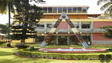
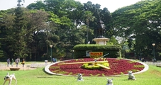
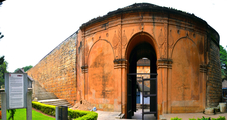

Top sights in Bangalore
HAL Aerospace Museum and Heritage Centre
For a peek into India’s aeronautical history, visit this wonderful museum past the old airport, where you can see some of the indigenous aircraft models designed by HAL. Interesting exhibits include a MIG-21, home-grown models such as the Marut and Kiran, and a vintage Canberra bomber. You can also engage in mock dogfights at the simulator machines (₹50 to ₹100) on the top floor, though the queues for this can be considerable.
Lalbagh Botanical Gardens
Spread over 96 hectares of landscaped terrain, the expansive Lalbagh Botanical Gardens were laid out in 1760 by the famous ruler Hyder Ali. As well as amazing centuries-old trees it claims to have the world’s most diverse species of plants. Try to visit in the early morning for the bird chorus. You can take a guided tour with Bangalore Walks.
Bangalore Fort
This ruined 1761 fort is a peaceful escape from the chaotic city surrounds, with its manicured lawn and stone pink walls. The fort remained in use until its destruction by the British in 1791, and today the gate and bastions are the only structures remaining. There’s a small dungeon here, and Ganesh temple with its Mooshak (ratlike creature) statue.